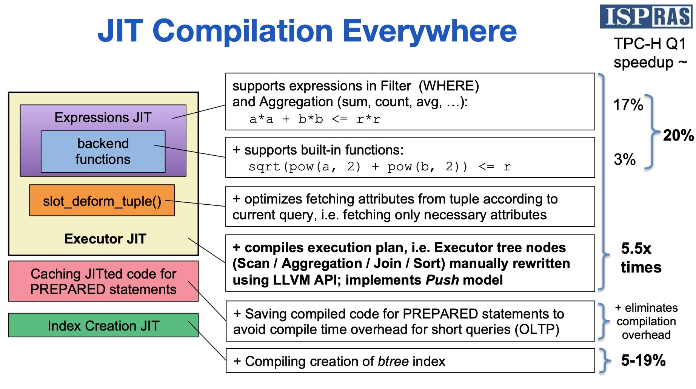
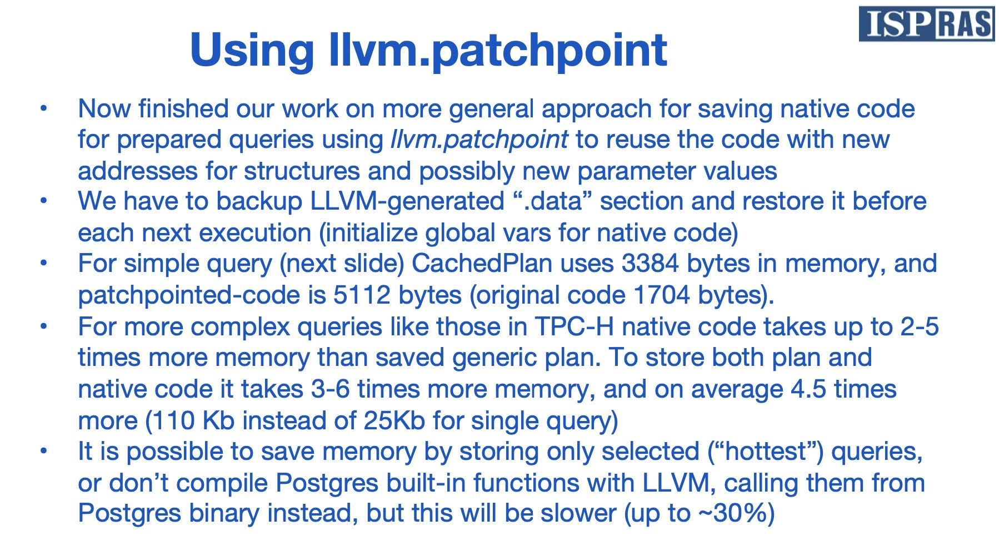
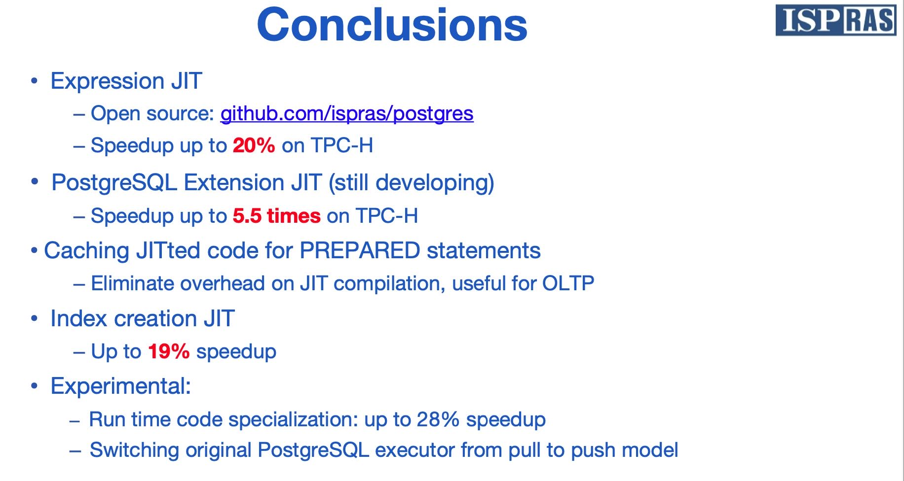

JIT-Compiling SQL Queries in PostgreSQL Using LLVM
https://www.youtube.com/watch?v=ZNTeVt8V6PU
ISP/RAS(Russian Academy of Science, Instituion of System Programming). 俄罗斯科学院，系统编程研究所。
从下图可以看到JIT收益比例：
- 20% 来自于表达式计算
- 5.5x 来自于执行引擎
- 5-19% 来自于索引创建
所以其实表达式切换成为JIT并不会带来太多的性能提升，当然如果认为20%也是huge improvement的话，那么这个JIT也是值得的。

看上去llvm.patchpoint用途有点类似于linker relocation. 我们可以在native code某些地方(比如常量）留下slot，这样如果只是plan里面常量变化的话，那么native code几乎是不需要变化的，我们只需要在执行之前对native code里面slot部分进行patch就行。

下图是他们最后的结论，可以看到JIT最能发挥作用的地方，其他地方都是20-30%左右的性能提升。
